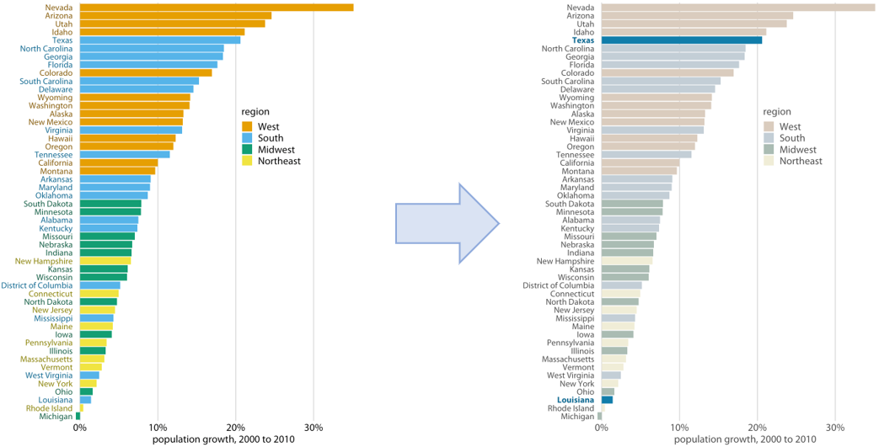
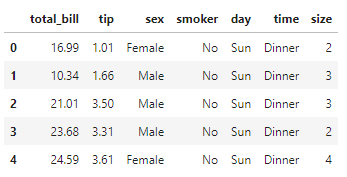
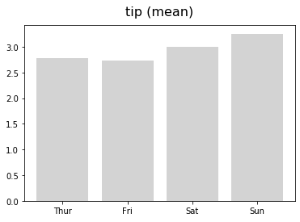
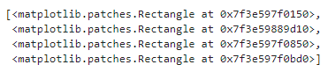
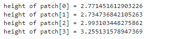
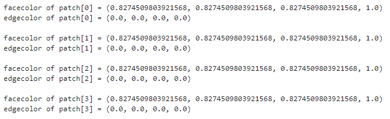
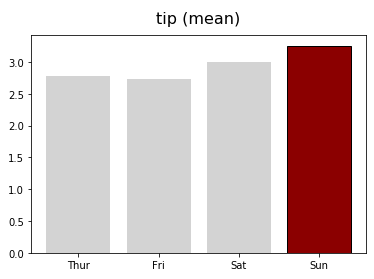
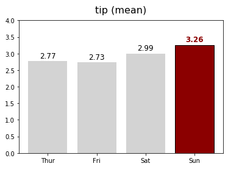

- 여러 데이터 중 특정 데이터를 강조하는 방법입니다.
- matplotlib을 이용하면 plot 객체에 개별적으로 접근해 색상과 모양을 제어할 수 있습니다.
Claus Wilke, “데이터 시각화 교과서”, 영문판(Free)
Colin Ware “데이터 시각화, 인지과학을 만나다”
White Paper-Principles of Data Visualization-What we see in a Visual
1. “다르면 눈에 띈다”
- 약 100년 전부터 우리의 눈과 뇌가 대상을 인지하는 방법에 대한 연구가 이루어졌습니다.
- 흔히 알려진 게슈탈트Gestalt 법칙을 비롯해 많은 것을 알게 되었고
- 그 중 하나가 “다르면 눈에 띈다”는 것입니다.
- 배경과 다르게 도드라진 브랜드는 구매를 유도하고
- 다수와 다른 일부는 다르다는 이유만으로 차별을 받기도 합니다.
- 이 특성을 이용하면 데이터를 효과적으로 전달할 수 있습니다.

- “데이터 시각화 교과서”에서 저자는 색을 이용해 데이터의 특정 요소를 강조하는 것을 권장합니다.
- 위 그림은 10년간(2000~2010) 미국의 주별 인구 증가율 그래프입니다.
- 좌측 그림도 나쁘지 않습니다. 정렬이 되어 있고, 지역별로 구분도 되어 있습니다.
- 그러나 텍사스와 루이지애나의 인구 증가율을 찾기는 쉽지 않습니다.
- 두 주가 남부에 속한다는 것을 모른다면 50여개 막대기를 모두 훑어야 합니다.
- 하지만 오른쪽처럼 색상을 수정해서 두 주만 부각시키면 찾기가 쉬워집니다.
2. Matplotlib에서 특정 데이터 강조하기
matplotlib: source code for matplotlib.patches
matplotlib: How-to
- Microsoft Excel이라면 이렇게 했을 것입니다.
- bar plot 그리기
- 강조하고자 하는 bar를 클릭해서 선택
- 색상 변경
- Matplotlib도 기본적으로 동일합니다.
- bar plot 그리기
- 강조하고자 하는 bar를 patch로 선택
- 색상 변경
- matplotlib에서 그리는 모든 객체는 patch로 관리되고 있습니다.
get_메소드로 속성을 가져올 수 있고,set_메소드로 속성을 제어할 수 있습니다.
3. Example code
3.1. Dataset from Seaborn
예시를 위해 seaborn의
tips데이터를 가지고 옵니다.seaborn.get_dataset_names()로 어떤 데이터셋이 있는지 볼 수 있습니다.1
2
3
4
5
6
7
8%matplotlib inline
import numpy as np
import pandas as pd
import matplotlib.pyplot as plt
import seaborn as sns
tips = sns.load_dataset("tips")
tips.head()
groupby()를 이용해 요일별 평균 데이터로 만들어 줍니다.1
2tips_day = tips.groupby("day").mean().reset_index()
tips_day
3.2. Bar Plot
요일별 평균 데이터를 bar plot으로 그려줍니다.
1
2
3
4
5fig, ax = plt.subplots()
ax.bar(tips_day["day"], tips_day["tip"], color="lightgray")
ax.set_title("tip (mean)", fontsize=16, pad=12)
plt.show()
축공간
Axes안에 들어온 객체는 막대기 4개입니다.존재를 확인해보겠습니다.
1
ax.patches

matplotlib.patches.Rectangle객체가 4개 있습니다.높이를 확인해보면, 요일별 평균 데이터가 그대로 있습니다.
1
2for i in range(len(ax.patches)):
print(f"height of patch[{i}] = {ax.patches[i].get_height()}")
이번엔
facecolor와edgecolor를 확인해 봅니다.get_facecolor(),get_edgecolor()를 사용하면 됩니다.1
2
3for i in range(len(ax.patches)):
print(f"facecolor of patch[{i}] = {ax.patches[i].get_facecolor()}")
print(f"edgecolor of patch[{i}] = {ax.patches[i].get_edgecolor()}\n")
일요일 데이터만 골라서 짙은 빨강으로 칠해보겠습니다.
set_facecolor(),set_edgecolor()를 사용하면 됩니다.1
2
3
4
5
6
7
8
9fig, ax = plt.subplots()
ax.bar(tips_day["day"], tips_day["tip"], color="lightgray")
ax.set_title("tip (mean)", fontsize=16, pad=12)
# Sunday
ax.patches[3].set_facecolor("darkred")
ax.patches[3].set_edgecolor("black")
plt.show()
“데이터 시각화 교과서”에 나오는 그림이 되었습니다.
- 조금 더 욕심을 내서, bar 위에 데이터를 글자로 넣어봅시다.
- 방법은 동일합니다. 돌아가며 높이(=데이터) 위에 데이터를 넣어줍니다.
- 그리고 일요일만 색깔과 굵기를 다르게 지정합니다. 
1
2
3
4
5
6
7
8
9
10
11
12
13
14
15
16
17
18
19
20
21
22
23
24fig, ax = plt.subplots()
ax.bar(tips_day["day"], tips_day["tip"], color="lightgray")
ax.set_title("tip (mean)", fontsize=16, pad=12)
# Values
h_pad = 0.1
for i in range(4):
fontweight = "normal"
color = "k"
if i == 3: # Sunday
fontweight = "bold"
color = "darkred"
ax.text(i, tips_day["tip"].loc[i] + h_pad, f"{tips_day['tip'].loc[i]:0.2f}",
horizontalalignment='center', fontsize=12, fontweight=fontweight, color=color)
# Sunday
ax.patches[3].set_facecolor("darkred")
ax.patches[3].set_edgecolor("black")
# set_range
ax.set_ylim(0, 4)
plt.show()